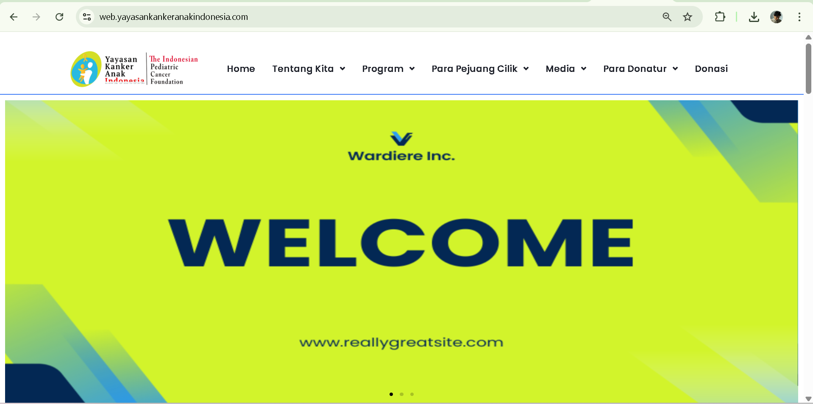

Featured Case Studies
Fokus pada 3 project dengan dampak paling relevan untuk recruiter.

Website Yayasan Kanker Anak Indonesia
Stack: WordPress, SEO, Content Management
Impact: proses update artikel lebih terstruktur untuk tim konten.
SEO
Content Ops
+30 artikel terkelola
Lihat Studi Kasus ->

Redesign Halaman Profil
Stack: Tailwind CSS, HTML
Impact: struktur konten lebih rapi dan mudah dipindai.
UX
Hierarchy
5 detik first impression
Lihat Studi Kasus ->

Portal Web YKAI
Stack: WordPress Admin, Content Workflow
Impact: tim non-teknis lebih mudah melakukan update rutin.
Workflow
Admin UI
2x lebih konsisten
Lihat Studi Kasus ->